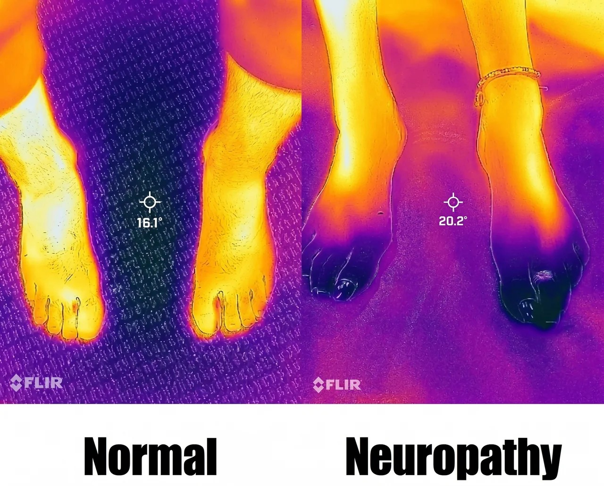

You've tried the medications. You've waited it out. And every morning, your feet still feel like they aren't yours. There's a reason — and it isn't in your head.
You went to the doctor. You got a prescription. Maybe a second one. Then someone told you to "just live with it." Meanwhile, the burning got worse. The numbness crept further up. You started skipping the morning walk because you couldn't trust your feet.
Here's what almost no one explains: neuropathy isn't really a pain problem. It's a communication problem. Your peripheral nerves can't send signals correctly to your brain — and no painkiller, no supplement, no nerve cream can fix that.
If your nerves can't talk to your body, no pill in the world will make them start.
These aren't textbook bullet points. They're what your day actually looks like.
Once you know neuropathy is a communication problem, the answer changes. We don't chase the pain — we go after the wiring underneath. Here's the four-step path every patient walks:
1. Identify the root cause. Not a label. Not a guess. We use advanced thermography to see exactly which nerves are misfiring, and why.
2. Restore nerve function. Drug-free, proven therapies that help damaged peripheral nerves start sending signals again.
3. Improve circulation. Better blood flow delivers the oxygen and nutrients your nerves need to actually repair.
4. Support your body's healing. A care plan built for your case — not a template that worked for someone else.
Start with the $37 Consultation
A full starting evaluation — same one our care plans begin with. If you decide to move forward, the $37 is applied toward your care.
By Dr. David S. Parker, DC, BCN. A short, plain-English read that explains what's actually happening in your nerves — and what to do about it.
Neuropathy doesn't sit still. Numbness becomes weakness. Weakness becomes falls. The earlier we catch the wiring problem, the more nerve function we can save. The next step is small — and it's the only one that matters today.
Real answers. Real hope. Real next steps. — Over 300 5-star reviews from Lancaster County patients.